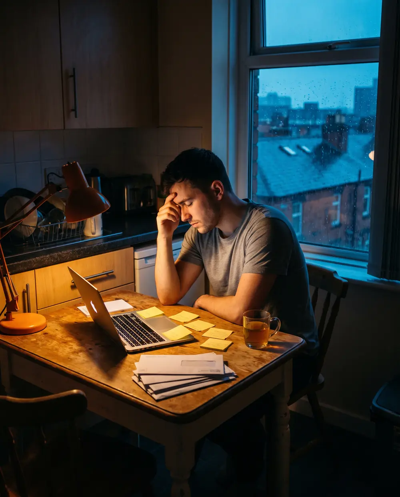
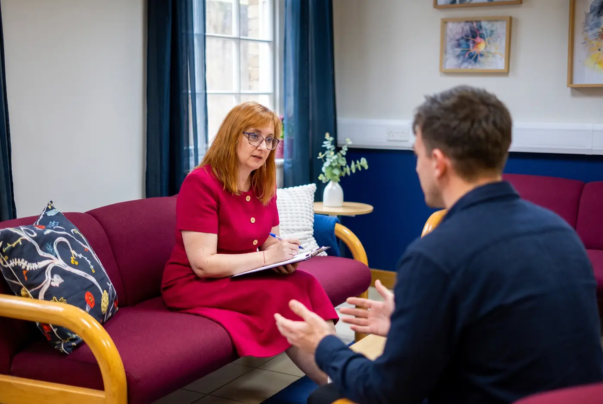
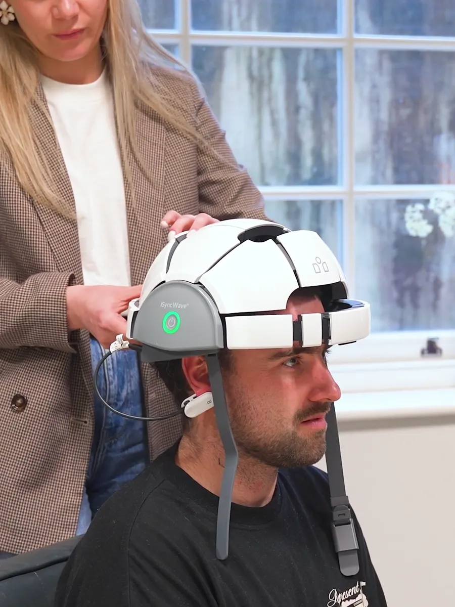
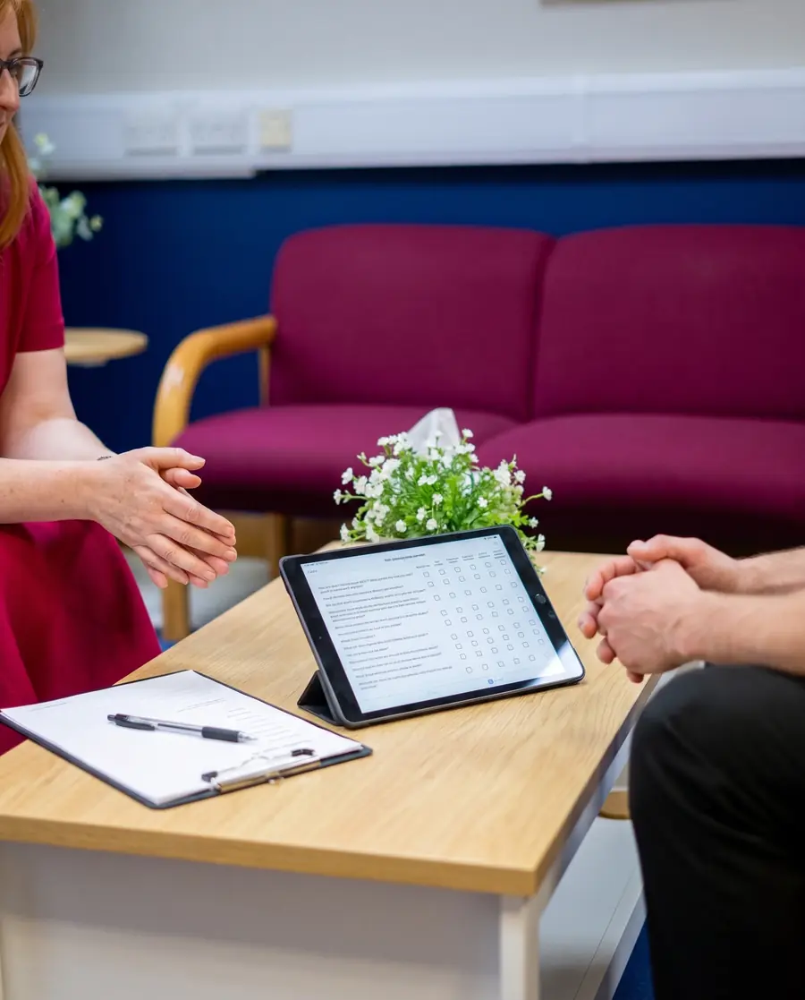
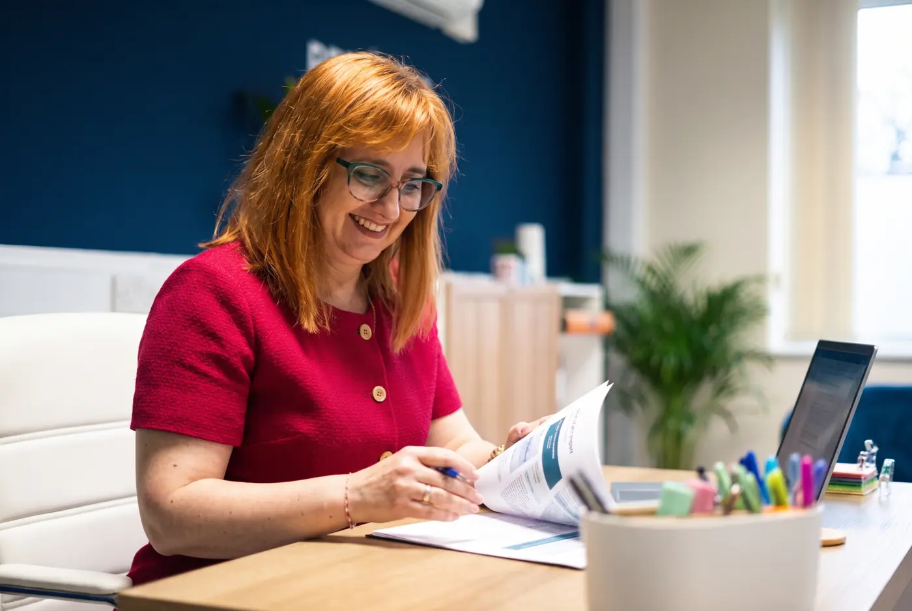
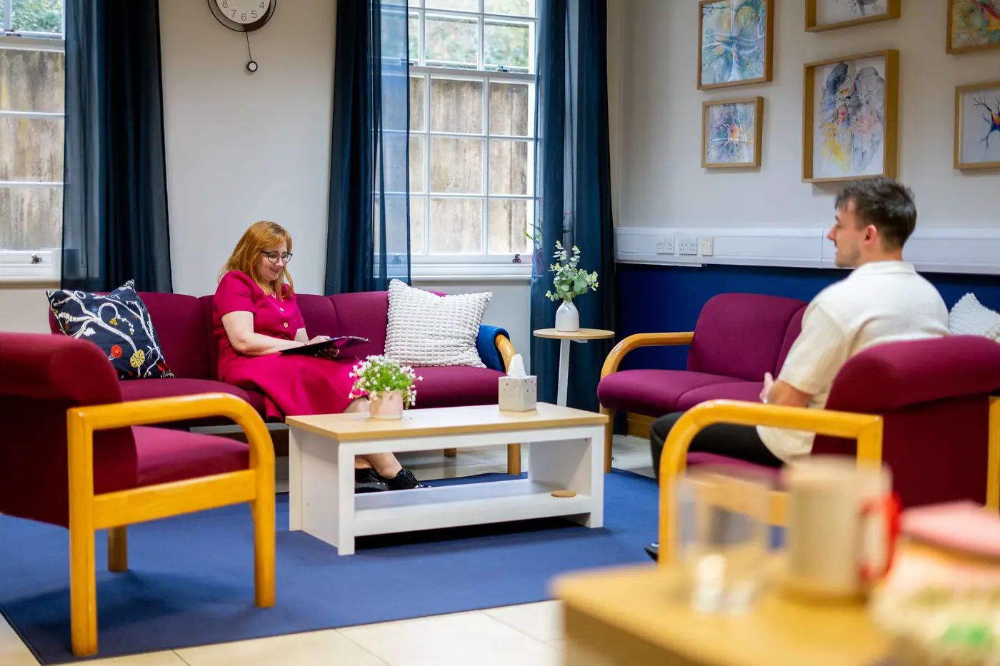
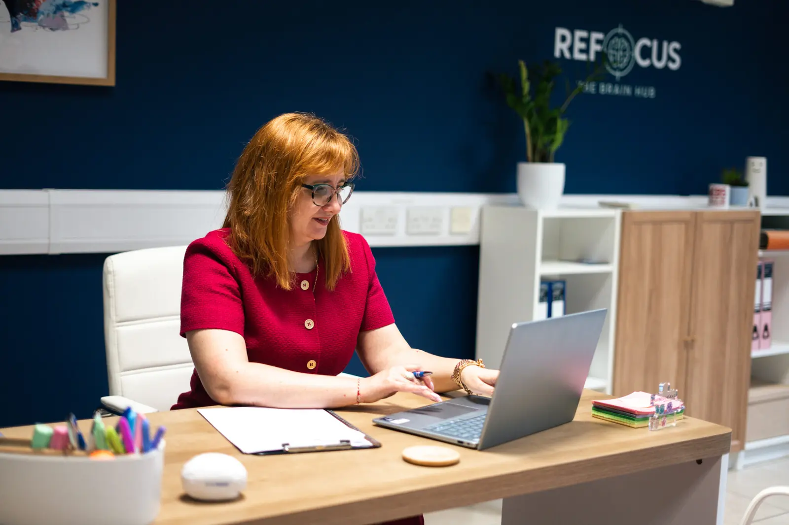
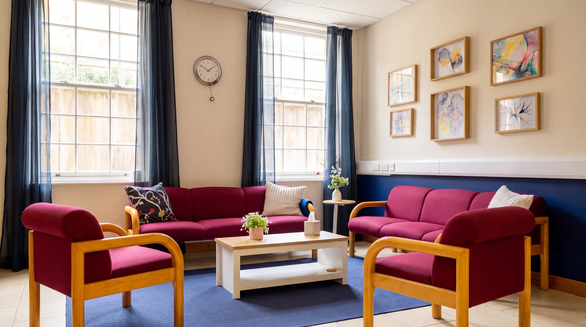

I didn't expect to gain this level of clarity about myself. At Refocus Hub, I finally felt understood rather than judged. The way they explain how the brain works is both scientific and easy to follow. If you struggle with anxiety, overthinking, or ADHD, this is genuinely one of the most helpful services you can access in the UK.
Private adult ADHD assessment in Manchester and online
A consultant psychiatrist-led ADHD diagnosis within weeks, not years, with a clear written report your GP can use.
- Led by experienced consultant psychiatrists
- NICE-aligned DIVA-5 clinical interview
- No GP referral needed
- Detailed report for your GP and employer
- From £750 until 30 November
What our patients and families say
Feeling understood, at last
I had a really positive experience with Refocus Hub. I initially reached out for support around focus and possible ADHD, but what I got was a much deeper understanding of how my brain actually works. The BrainMap assessment was particularly helpful, not overwhelming, just clear and well explained. It connected a lot of things for me, especially around stress and emotional responses. I would definitely recommend this service to anyone in the UK looking for a more in-depth psychological approach.
Refocus Hub offers a highly professional ADHD assessment service in the UK. The process was well-organized, and the feedback I received was detailed, practical, and tailored to my specific cognitive and emotional patterns. This is not a generic approach, it's personalised and evidence-based. Highly recommended.
I had a very positive experience with Refocus Hub. The assessment process was clear, structured, and grounded in real psychological understanding rather than quick labels. What stood out most was the focus on underlying mechanisms, not just symptoms. I would highly recommend Refocus Hub to anyone in the UK looking for professional psychological support, especially for ADHD and emotional regulation.
The team is amazing really kind friendly place o struggled a bit with my anxiety but I felt very comfortable they are the first people in my whole life too diagnose me with adhd. Would reccomend too anyone. Thank you
Outstanding service and a really positive experience. I visited Refocus The Brain Hub with my son regarding ADHD, and I honestly couldn't have been happier with the service we received. From the moment we arrived, we were made to feel welcome, listened to and supported. The team were professional, caring and understanding, and I really appreciated the time and attention they gave us. As a new business, they have made a fantastic impression, and it's clear that they genuinely care about the people they support. I'm more than happy to give Refocus The Brain Hub five stars and would definitely recommend them to anyone looking for a professional, supportive and caring service. Wishing them every success for the future!
Following some research we chose Refocus for a combined ASD and ADHD assessment for our daughter. We chose Refocus as the assessment would be in person and they could liaise with school to allow them to inform the process. We found the environment calming, the consultants and clinicians expert in their field and the follow up meeting and report clear. We wouldn't hesitate in recommending.

“Why does everything feel harder for me?”
Adult ADHD assessment
Answers that finally make sense
Do you lose hours to procrastination, then race to catch up? Feel exhausted from holding everything together, wondering why life seems harder for you than for everyone else? We hear this every day, and we understand. Our consultant psychiatrists take time to understand your whole story using gold-standard clinical tools. You leave with clear answers, a practical plan and the relief of finally understanding your brain.
Book a free 15-min consultationADHD in adults often looks different
Does this sound like you?
Many adults, particularly women, appear capable on the outside while privately struggling. Tap anything you recognise.
Nothing selected yet.
This is not a test or a diagnosis. These experiences also overlap with anxiety, low mood, sleep problems, autism and hormonal change, which is exactly why a specialist assessment matters.


Dr Miriana VrajitoriuFounder and Medical Director
“A questionnaire can't see your brain. We take the time to understand the whole person.”
Why Refocus
Consultant-led. Clinically robust.
Every adult ADHD assessment at Refocus is carried out by a consultant psychiatrist, not a junior clinician working from a script.
Senior NHS experience
Our clinicians have led NHS neurodevelopmental services, including Neurodevelopmental Pathway Medical Lead and Trust Safeguarding Doctor roles.
NICE-aligned and quality assured
Assessments follow NICE guidance and the Adult ADHD Assessment Quality Assurance Standard (AQAS), using the DIVA-5 structured interview.
The whole picture
We screen for anxiety, low mood, autism traits, burnout and emotional dysregulation, so overlapping conditions are not missed.
Reports built for real life
A clear written report you can share with your GP, employer or university, including guidance on NHS shared care.
Our approach to adult ADHD
Understand. Map. Personalise. Refocus.
A diagnosis can give you answers. At Refocus, it is never the end of the conversation.
-

Step 1: Understand
Start with the whole person
We listen to your story, your childhood, your strengths and what feels hard right now before deciding what it means. Adult ADHD often overlaps with anxiety, low mood, autism, sleep problems, trauma and hormonal change, so our assessment is built to tell apart experiences that look similar on the surface but aren't.
-

Step 2: Map
See another layer of the picture
Where clinically appropriate, we add qEEG brain mapping, a non-invasive recording of your brain's electrical activity. It never replaces clinical assessment and is not used to diagnose ADHD on its own, but it adds objective information about attention and regulation alongside your clinical picture.
Sometimes the first step isn't another label. It's a clearer picture.
-
Step 3: Personalise
Use what we learn to guide what comes next
Two adults can share an ADHD diagnosis and experience it completely differently, so your recommendations should reflect you. Your plan may include psychoeducation, ADHD coaching, workplace adjustments, medication support, or neuromodulation such as transcranial magnetic stimulation (TMS), neurofeedback and photobiomodulation.
The right pathway is the one that makes sense for you.
-

Step 4: Refocus
Move forward with clarity
Our goal isn't simply a diagnosis. It's helping you understand your brain well enough to make better decisions at work, at home, in your relationships and through every stage of life.


Secure online forms, completed at home
What happens in your assessment
A thorough assessment, step by step
ADHD rarely exists in isolation. That is why our assessment goes well beyond screening forms.
We get to know you first
Once your deposit is paid, you get access to our secure patient portal. Your consultant reviews everything before you meet, so your appointment is focused and meaningful.
ASRS v1.1Adult ADHD Self-Report Scale
BAARSBarkley Adult ADHD Rating Scale
DASS-10Depression, Anxiety and Stress Scale
Observer formsFrom someone who knows you well, ideally since childhood
Time with a senior consultant
Your appointment lasts up to 90 minutes, in our Manchester clinic or by secure video. It includes the structured DIVA-5 interview, which uses real-life examples rather than tick boxes.
- Childhood development and school history
- Work, study and everyday functioning
- Relationships and emotional wellbeing
- Strengths, coping strategies and masking
- Mental health and overlapping conditions
Where appropriate, your consultant shares their clinical impression with you on the day.
A report you can actually use
You receive a comprehensive written report and the chance to talk through the outcome and ask questions.
- Diagnostic outcome, where criteria are met
- Other explanations your consultant considered
- Workplace or study adjustments
- Therapy, coaching and lifestyle recommendations
- Medication guidance, including NHS shared care options

Neuro-Hormone ADHD Pathway£750£900Online, until 30 November
ADHD in women
Missed as a girl. Understood now.
Women are often diagnosed late, after years of masking, burnout and being told they are simply anxious or disorganised.
For many women, symptoms become harder to manage in their forties, just as hormones begin to change.
Our Neuro-Hormone ADHD Pathway assesses ADHD, mental health and perimenopause together, led by clinicians who understand how hormones and attention interact. You get one joined-up picture instead of separate appointments that never quite connect.
Ask about the women's pathway
Filmed at our Manchester clinic
A real qEEG brain mapping session
Optional add-on
See another layer with qEEG brain mapping
qEEG is a painless recording of your brain's electrical activity. It is never used on its own to diagnose ADHD, but in selected cases it adds useful insight into attention, regulation and processing, and helps shape your recommendations.
- A lightweight sensor headset is fitted while you sit comfortably
- Your brain activity is recorded and turned into colour maps
- Your clinician explains what the maps show and how they fit your assessment
£200added to your assessment
usually £350
Ask if it's right for you
Clear, all-inclusive pricing
Choose how you would like to be assessed
The same consultant-led assessment and written report, whether you visit our Manchester clinic or join us online.
Online, anywhere in the UK
Virtual ADHD assessment
£750£850Save £100
- Up to 90 minutes with a consultant psychiatrist by secure video
- Pre-assessment questionnaires and observer input
- Comprehensive written report for your GP
- Fits around work and family life

6 Oxford Place, ManchesterFace-to-face ADHD assessment
£850£1,050Save £200
- Up to 90 minutes in person at our calm Manchester clinic
- Pre-assessment questionnaires and observer input
- Comprehensive written report for your GP
- Easy to reach from across Greater Manchester and the North West
Neuro-Hormone ADHD Pathway£750 £900
ADHD, mental health and perimenopause, assessed together online. £850 face to face (usually £1,000).
qEEG brain mapping£200 £350
When booked alongside your assessment and clinically appropriate.
£250 deposit to book
Your deposit secures your appointment and unlocks the patient portal. The balance is paid before your assessment.
From first call to clear answers
Five simple steps, with our team guiding you at every stage.
- 1
Free 15-minute call
Tell us what's going on and ask anything. No pressure.
- 2
Pay your deposit
A £250 deposit secures your place and opens your portal.
- 3
Complete online forms
Your questionnaires and observer forms, done at home.
- 4
Matched to a consultant
We review your information and book the right clinician.
- 5
Your assessment
Meet your consultant, then receive your written report.
Meet the minds behind Refocus
Your adult ADHD specialists
Consultant psychiatrists, psychologists and advanced practitioners with extensive NHS and private experience.
 Adult ADHD
Adult ADHDDr Muhammad Adnan Hafeez
Consultant Psychiatrist, Adult ADHD and Neuropsychiatry
GMC registered. Significant experience in adult ADHD assessment and treatment, psychopharmacology and neuropsychiatry.
Adult ADHD
Dr Syeda Sabeen Ashar
Consultant Psychiatrist, Liaison Psychiatry and Adult ADHD
GMC Specialist Register, MRCPsych, CCT, Section 12 approved. Over two decades of NHS experience.
FounderDr Miriana Vrajitoriu
Consultant Psychiatrist, Founder and Medical Director
GMC Specialist Register, MRCPsych, ADOS-2, ADI-R. Former NHS Neurodevelopmental Pathway Medical Lead.
Dr Helen Walsh
Consultant Clinical Psychologist, Clinical Lead
ADOS trained. Over 30 years' NHS experience leading neurodevelopmental assessment services.
Dr Arif Qadir
Consultant Psychiatrist, Safeguarding Lead
ADI-R, DISCO-3 and Maudsley adult ADHD assessment training.

Dr Suzana Alexandra Corciova
Consultant Psychiatrist
GMC registered, MRCPsych, CCT, ADI-R, UKAAN.

Sarah Williams
Advanced Clinical Practitioner, Women's Neurodevelopmental Health Lead
RMN, V300 Non-Medical Prescriber, MSc Advanced Clinical Practice.

Claire McGuinness
Advanced Nurse Practitioner, ADHD Medication Pathway Lead
NMC registered Independent Prescriber with over 30 years' NHS experience.

Denisa Anamaria Scripcariu
Clinical Psychologist, Brain Mapping Specialist
Applied neuroscience and qEEG brain mapping.

A message from our founder
“There are 8 billion brains in the world. Your care should begin with understanding yours.”
I spent over two decades in psychiatry, including years leading NHS neurodevelopmental services. I helped develop ADHD and autism pathways and supported people searching for answers.
Refocus is the service I wanted to exist: rigorous enough for complex cases, curious enough to look beyond the obvious, and human enough never to forget the person behind the data.
Dr Miriana VrajitoriuFounder and Medical Director, GMC 7211553
After your assessment
Clarity changes what happens next
- Finally understand why life has felt harder than it should
- Let go of years of self-blame and shame
- Get practical support at work, at home and in relationships
- Know your options, including treatment and NHS shared care
Questions, answered
Private adult ADHD assessment FAQs
Can't see your question? Our team is happy to help.
No. You can book directly with us, starting with a free 15-minute consultation. You do not need a referral from your GP.
Until 30 November 2026, a virtual assessment costs £750 (usually £850) and a face-to-face assessment in Manchester costs £850 (usually £1,050). The price includes your questionnaires, the consultant assessment and your written report. A £250 deposit secures your appointment.
Start with a free 15-minute call. After paying your deposit, you complete questionnaires and observer forms online. You then meet a consultant psychiatrist for up to 90 minutes, including the DIVA-5 interview, and receive a written report with your outcome and recommendations.
We offer assessments within weeks rather than the years many people wait on the NHS. We will confirm current availability on your free call.
Yes. Online assessments use the same consultant psychiatrists, the same DIVA-5 interview, the same questionnaires and the same written report. Many people find it easier to talk openly from home.
Your report is written to be shared with your GP and follows NICE guidance. Whether a GP agrees to NHS shared care for medication varies between practices, and we will be open with you about your local options.
You still leave with a clear explanation of what may be going on, such as anxiety, low mood, sleep, trauma or autism traits, plus practical recommendations for what to do next.
Yes. Our Neuro-Hormone ADHD Pathway looks at ADHD, mental health and perimenopause in one joined-up assessment, from £750 online until 30 November 2026.
No. qEEG is never required for diagnosis and is never used on its own. In selected cases it adds extra insight, and your consultant will tell you honestly whether it is likely to help.
Our clinic is at 6 Oxford Place, Manchester M14 5RZ. Patients travel to us from across Greater Manchester, Liverpool, Cheshire, Stockport, Wigan, Lancashire and Yorkshire. Online assessments are available to adults across the UK.
Our clinicians are registered with and recognised by


Take the first step
Book your free 15-minute consultation
Tell us a little about yourself and a member of our team will be in touch to arrange a convenient time. Confidential, supportive and no pressure.
Request your free call
It takes less than a minute.